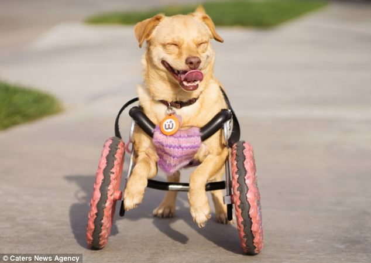

Azor
The most spunkiest dog in the world.

My dog Azor is a special needs dog since he doesn't have back legs.
Here are a few things Azor likes to eat:
- rocks (And why he shouldn't do that)
- cheeseburgers
- racoons
- veggies
- carrots
- bell peppers
- avocado
- pickles
- cat food